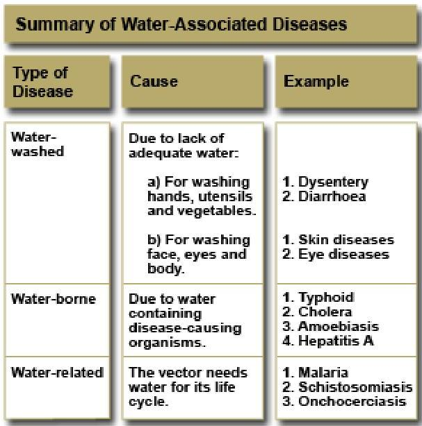

💧
Topic 2
Water and Sanitation
01
Introduction to Water & Health
Water is essential for life, making up over 50% of human body weight. However, it can also be a vehicle for disease transmission. Safe water and proper sanitation are critical for community health.
Objectives
- Describe the importance of water to health
- Explain different types of waste
- Describe methods of waste disposal
02
Water and Disease Transmission
Water plays different roles in disease transmission:
| Category | Description | Examples |
|---|---|---|
| Water-washed (Water Scarce) | Caused by lack of water for personal hygiene. | Scabies, Trachoma, Dysentery |
| Water-borne | Caused by drinking contaminated water containing pathogens. | Cholera, Typhoid, Amoebiasis, Hepatitis A |
| Water-related | Water is necessary for the vector's life cycle. | Malaria (mosquitoes), Schistosomiasis (snails), Guinea Worm |

03
Sources & Protection of Water
Main Sources
- Rain Water: Cleanest natural source if collected properly (clean roof, gutters, first flush diversion).
- Surface Water: Rivers, lakes, dams. Often contaminated by runoff and waste. Requires treatment.
- Underground Water: Springs, wells, boreholes. Generally cleaner as it's filtered through soil/rock.
- Sea Water: Salty; requires expensive desalination.
Protection Methods
- Springs: Build retaining walls, fence the area, dig diversion drains, clear vegetation.
- Wells: Site >100m from latrines, build strong lining and cover, construct sloping apron.
- Rainwater: Use clean tanks, divert first rains (first flush) to clean roof dirt.
04
Water Purification & Storage
Safe Water System involves treatment, safe storage, and behavior change.
Methods:
- Chlorination: Using Jik®, Milton®, or WaterGuard®. 1% chlorine solution. Contact time: 30 minutes.
- Boiling: Effective but energy intensive.
- Filtration: Commercial or sand filters.
Safe Storage
Use narrow-mouthed containers with lids. Do not dip vessels into the water; pour it out or use a tap.
05
Sanitation & Waste Disposal
Types of Waste
Liquid Waste: Excreta (faeces/urine) and wastewater.
Solid Waste (Refuse): Domestic, street, industrial, hospital, and agricultural waste.
The 4F Connection
Faeces → Fingers/Flies/Fields → Food. Proper sanitation breaks this chain.
Liquid Waste Disposal
- Pit Latrine: Best for rural areas. Needs a hole, squatting slab, and shelter. Vent pipes (VIP latrines) reduce flies.
- Water Carriage System: Flush toilets connected to septic tanks or sewage lines. Hygienic but expensive; requires piped water.
- Borehole Latrine: Deep, narrow hole. Fast to install (disaster relief).
- Trench Latrine: Temporary camps.
Solid Waste Disposal
- Composting: Organic waste → Humus/Manure. Aerobic process.
- Controlled Tipping: Burying waste in layers in deep pits/depressions.
- Incineration/Burning: Good for combustible waste and hospital waste (sharps/dressings).
- Recycling: Reusing non-biodegradable items (glass, plastic, metal).
Knowledge Check
Test Your Understanding
Complete this quiz to assess your comprehension of Water and Sanitation.
Loading quiz...